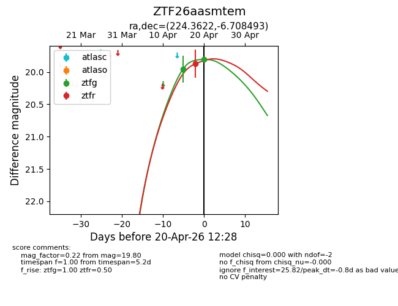
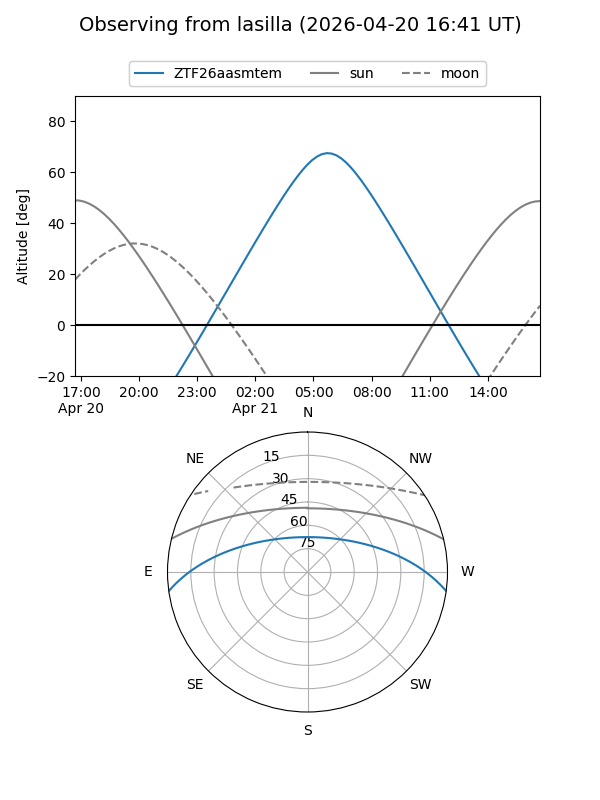
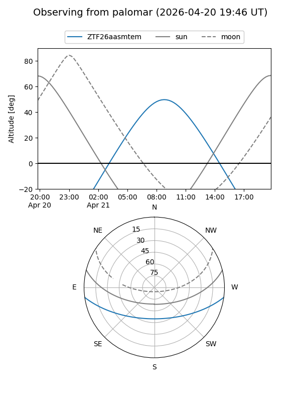

ZTF26aasmtem
Target ZTF26aasmtem at 2026-04-20 12:40
Aliases and brokers:
FINK: link
Lasair: link
ALeRCE: link
alt names
ZTF26aasmtem (ztf,fink_ztf)
Coordinates:
equatorial (ra, dec) = 224.3622,-6.70849
equatorial (HMS+DMS) = 14:57:26.94,-06:42:30.58
galactic (l, b) = (349.5713,+44.45547)
Flags:
Photometry:
last ztfg=19.80, ztfr=19.87
2 ztfg, 1 ztfr detections
Lightcurve

Visibility


Additional plots